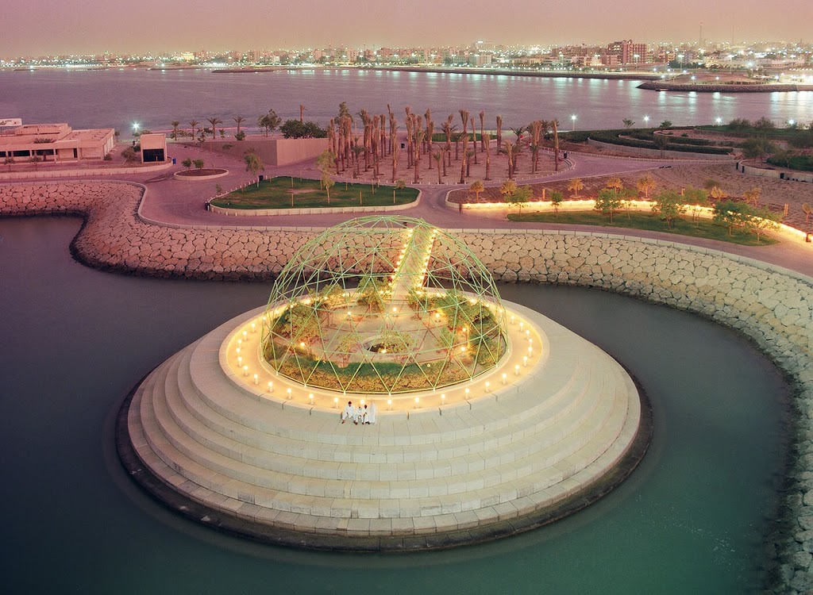
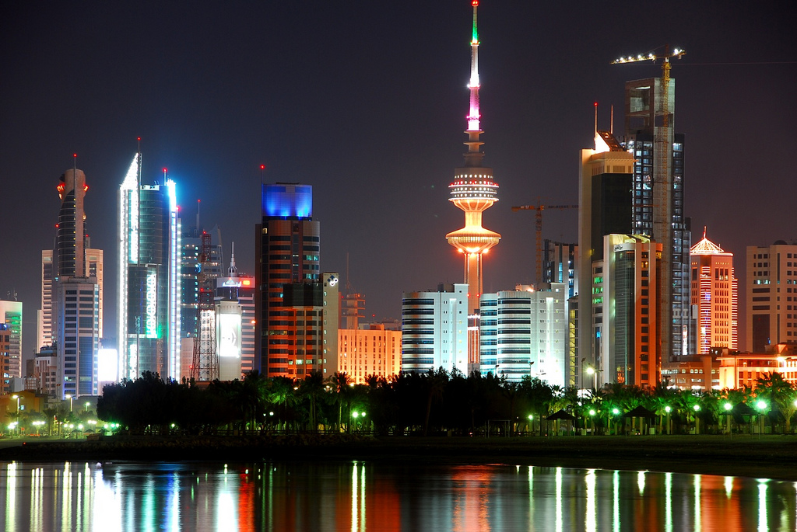
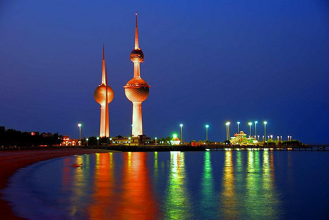

New York Tourist Profile:uwait City is the capital of Kuwait, marked by excellent museums, eclectic souqs and malls, a world-class aquarium and stunning architecture. A fascinating history adds to these sights, and the capital remains one of the most intriguing cities in the region.Kuwait City is the capital of Kuwait, marked by excellent museums, eclectic souqs and malls, a world-class aquarium and stunning architecture. A fascinating history adds to these sights, and the capital remains one of the most intriguing cities in the region. Best Time to Visit November to April is the best time to visit the region. it is winter here during the time and weather is pleasant. Top Places to Visit in Kuwait City 1. The Old Souq The Old Souq represents the city’s past, and the Arab Fund Building represents its bright future. The magnificent exterior gives way to an airy and light interior that is a tribute to the Arabic architectural principles of decoration, integrity of space and function. The sunny eight-story atrium opens to exquisite meeting rooms and extravagant corridors, and the region’s best traditional craftsmanship is represented through lavish carpets, ceramic sculptures and woodwork. To see the extraordinary building, call to request an appointment with a tour guide. 2. The Aquarium One of the most popular tourist draws in the capital is the Aquarium, housed in a sail-shaped building on the coast. It is the Middle East’s largest aquarium and home to a dizzying array of sea life that includes turtles, black-spotted sweetlips, giant spider crabs, living reefs, fluorescent jellyfish and more. Every display is interesting, but the most spectacular are the floor-to-ceiling wraparound ray and shark tanks. 3. National Museum There are a number of impressive museums in Kuwait City, and one of the best is the National Museum. During the Iraqi occupation, many of the exhibition halls were damaged, burned or looted, but intense pressure from the international community has led to the return of many of the museum’s treasures. More than 2,000 pieces are now on display, detailing various aspects of the nation’s heritage, history and culture. The best exhibits display ancient treasures found on Failaka Island and Hellenistic limestone carvings. 4. Tareq Rajab Museum The exquisite Tareq Rajab Museum is another one of Kuwait City’s finest. Housed in a sprawling villa, the ethnographic museum includes dazzling gold jewelry, costumes worn by peasants and princes, Jaipur enamels, inlaid musical instruments, Nepalese necklaces, Omani silver, Bahraini pearls and more. 5. Al-Qurain Martyrs’ Museum One of the most moving spaces in the city is the Al-Qurain Martyrs’ Museum. The small museum is a memorial to not just the patriots but also to the other Kuwait City families who suffered during the Iraqi occupation. Other places worth visiting in the capital include the Al-Hashemi Marine Museum, the quirky House of Mirrors, the famous Kuwait Towers, the Beit Dickson, home of British agent Colonel Harold Dickson, the extensive Corniche with its 10 kilometers of beaches, paths and parks, the Popular Traditional Museum and the Grand Mosque, the biggest of the capital’s more than 800 mosques. |